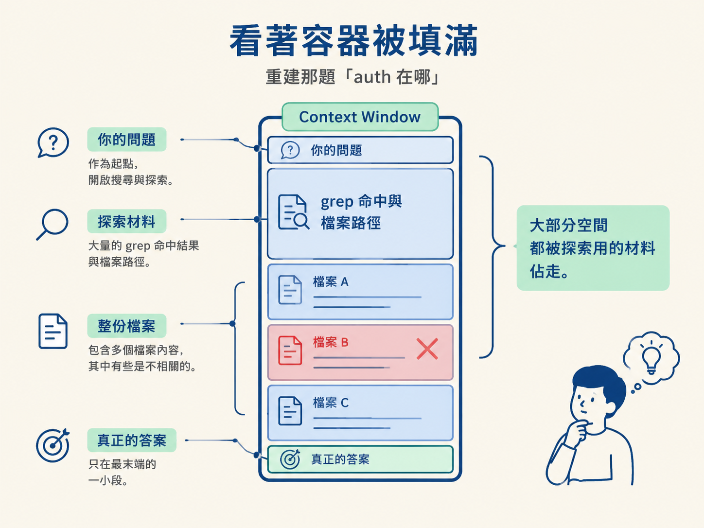
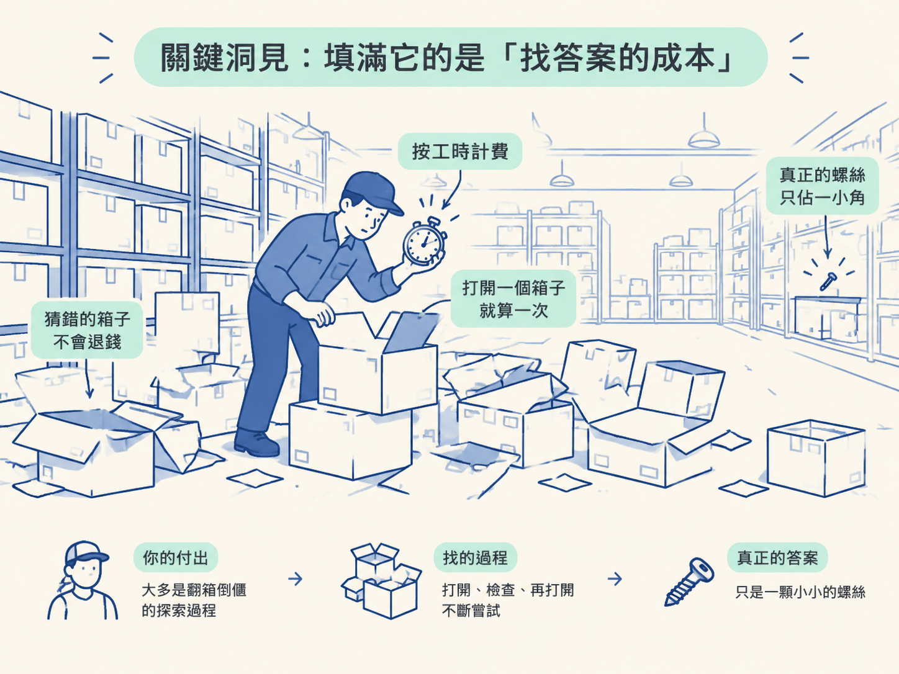
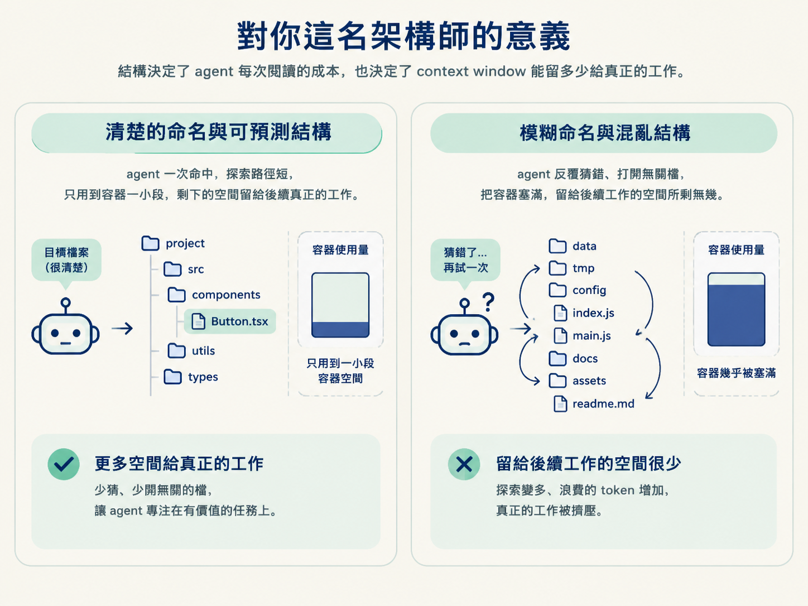

能說明 context window 是一個裝下所有讀取、輸入與回覆的單一容器，並且判斷出：把它填滿的主因是「尋找答案的成本」，而不是答案本身。
上一節你看到 agent 怎麼在你的程式庫裡找路：沒有索引，也沒有預先畫好的地圖。它只能 grep 搜字、glob 找檔名、read 打開檔案，一個接一個地讀，直到把答案拼湊出來。
現在換一個很自然、卻常常被忽略的問題：這些被讀進來的東西，最後都到哪裡去了？
你大概有過這種體感。一個 session 剛開始很聰明，問什麼答什麼；聊了半小時、解掉幾個問題之後，它開始變慢、變得遲鈍，甚至把你早先講過的事忘掉。很多人把這歸咎於「專案太大」或「問題太難」。但真正的答案可能讓你意外：問題往往不在你的專案有多大，而在於一個你看不見的容器正在被慢慢填滿。更麻煩的是，填進去的大部分東西，根本不是你要的答案。
agent 在過程裡讀的、你打的、它回覆的，全部都會被裝進同一個地方。這個地方叫 context window（上下文視窗）。
你可以把它想成一個有硬性上限的容器。整個 session 期間，所有東西都住在裡面，直到 session 結束才清空。
有些工具支援的 window 大到一百萬個 token，聽起來像天文數字，好像永遠裝不滿。這正是最讓開發者意外的地方：即使數字這麼大，它還是填得比你想像快。
原因不是你的專案突然變大，而是填進去的東西有一個你沒算到的結構。
把上一節那題「這個專案的 auth 是怎麼運作的」重新跑一遍。這次不要看 agent 找到什麼，而是看它一路上往容器裡丟了什麼。
第一，你那個問題本身先進去。它很小，幾乎不佔空間。
第二，搜尋結果跟著進來。每一筆 grep 的命中、每一個檔案路徑、每一行它為了判斷而讀的周圍文字，全都進了 window。這些不是免費的，它們是實實在在的 token，就坐在容器裡。
第三，它打開檔案來讀。注意，是整個檔案，不是只有相關的那個函式。檔案裡的每一個 import、每一行註解、每一段夾在你需要的那段程式碼上下的無關程式碼，通通被載入。
第四，也是最容易被忽略的一步：它還開了第二個檔，結果那個檔根本無關。這是一次猜測，猜錯了。但猜錯的檔案不會被退費，它就這樣留在 window 裡，靜靜佔著位置。
最後，你真正想要的那個答案，只是整段過程最末端的一小段。

| 容器裡放進了什麼 | 它佔的份量 | 是你要的嗎 |
|---|---|---|
| 你的問題 | 很小 | 是，但只是一開始 |
| 搜尋結果（命中、路徑、周圍文字） | 可觀 | 大部分不是 |
| 被打開的整個檔案 | 很大 | 只有一小段是 |
| 猜錯、無關的那個檔 | 不小 | 完全不是 |
| 真正的答案 | 一小段 | 是 |
把上面那張表看一遍，你會發現一件很反直覺的事：容器裡絕大部分的東西，不是有用的部分，而是找到有用部分的成本。
搜尋、開啟、猜錯、多讀的那些，都只是過程。而你真正關心的那個答案，在整個畫面裡小得可憐。
這不是特例。把同一個模式拉長到一個真實 session，不是一題，而是一整個功能，在三十到四十輪對話裡慢慢蓋出來，每一輪都在重複同樣的循環：搜尋、開檔、有時猜錯、然後抽出答案。再大的 window 也會被填滿。而填滿它的原因，不是因為你的專案異常龐大，是因為探索本身就是昂貴的。每個 agent 在能動手之前，都必須先探索。
用一個生活化的比喻。你請人到一間塞滿箱子的倉庫裡，找一顆特定的螺絲。他每打開一個箱子，你都按工時計費；猜錯打開的箱子不會退錢；而那顆真正要找的螺絲，在整個翻找過程裡只佔一小角。你付出去的錢，絕大多數是「翻箱倒櫃」這件事，不是那顆螺絲本身。

知道 window 會這樣被填滿之後，你可以放下一個錯誤的焦慮：把 window 填滿本身不是罪，不需要每次緊張兮兮地盯著數字。
但同時也要接受另一件事：它也不是免費的。每一個被浪費的片段、每一次猜錯、每一個無關的檔案，都是本來可以留給這個 session 後面重要工作的空間。前面花掉的空間不會回來，後面能用的就變少。
這正好接回上一節為什麼要談命名與結構。好結構的價值，在 token 的世界裡看得很清楚。清楚的命名讓 agent 一次命中，可預測的結構讓它少猜、少開無關的檔。猜錯變少，浪費的探索變少，你的 window 就能留下更多空間給真正的工作。結構不是風格問題，它是你對 agent 每次閱讀成本的直接控制。

context window 是一個裝下整個 session 所有讀取、輸入與回覆的單一容器，有硬性上限，而且填得比你想像快。它填滿的主因不是專案大，而是探索很貴：搜尋結果、整個檔案、猜錯的無關檔，全部留在裡面且不退費，而你真正要的答案只是最末端的一小段。好結構能減少猜錯，把 window 留給真正的工作。
知道 window 會滿，下一步的問題很自然：那滿了之後會怎樣？多數人的直覺是「滿了才出問題」。但實際量測的結果完全不是這樣：它在你把 window 裝滿之前，品質就已經開始往下掉了。這就是下一節要講的 context rot。